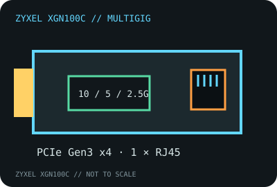

[ MODEL-SPECIFIC NETWORK HARDWARE RECORD ]
Zyxel XGN100C 10G Network Adapter
Single-port 10GBASE-T PCIe card with multigigabit fallback. The manufacturer’s public sheet does not identify the silicon stepping, so this record does not assign a guessed controller variant.

IDENTIFICATION: Exact Zyxel model XGN100C. The product name is the published SKU; verify the hardware label and device ID for a particular revision.
Exact SKU, interface and compatibility
| Exact model / SKU / revision | Zyxel XGN100C 10G Network Adapter; public datasheet does not assign a separate hardware revision to the retail model. |
|---|---|
| Controller | Marvell AQtion 10GbE controller family, commonly identified with the AQC107 on this model; Zyxel’s public datasheet does not state the ASIC stepping. Verify PCI vendor/device ID and chip marking rather than treating the inferred family as a board-revision guarantee. |
| Bus, ports and connector | PCI Express Gen 3 x4 (the datasheet also allows compatible Gen 2 x4 operation); one 8P8C/RJ-45 copper port; standard and low-profile bracket options. |
| Per-port link rates | 10GBASE-T, 5GBASE-T, 2.5GBASE-T, 1000BASE-T and 100BASE-TX according to the XGN100C datasheet. |
| Driver and operating systems | Zyxel’s archived package lists Windows 7/8/8.1/10 and Windows Server 2012, plus selected Linux 3.x and 4.2/4.4 kernels. Use the XGN100C driver from Zyxel’s download library; this older matrix does not certify later Windows or Linux releases. |
| Cabling and compatibility caveats | Use a standards-compliant cable and channel length for the target speed, a multi-gigabit link partner and a PCIe slot with four usable lanes. Thermal clearance and NAS/server qualification are chassis-specific. |
| Controller/revision caveat | The official user guide and datasheet do not document a controller stepping. Do not claim every card bearing XGN100C uses the same silicon revision without inspecting the card. |
Field qualification
Check the link partner’s advertised rate, cable path, PCIe lane allocation, OS driver and card temperature. A link falling back to 1GbE can be caused by the peer or cabling and does not by itself establish a defective adapter.
Zyxel datasheet and quick-start guide
- Zyxel XGN100C datasheet (PDF)Manufacturer link-rate, interface and compatibility reference.
- Zyxel XGN100C Quick Start Guide (PDF)Manufacturer installation and product identification guide.
- Zyxel XGN100C download libraryManufacturer drivers, documentation and release-specific support.